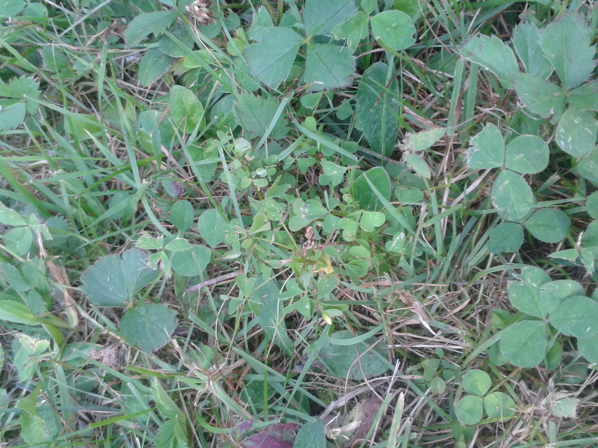
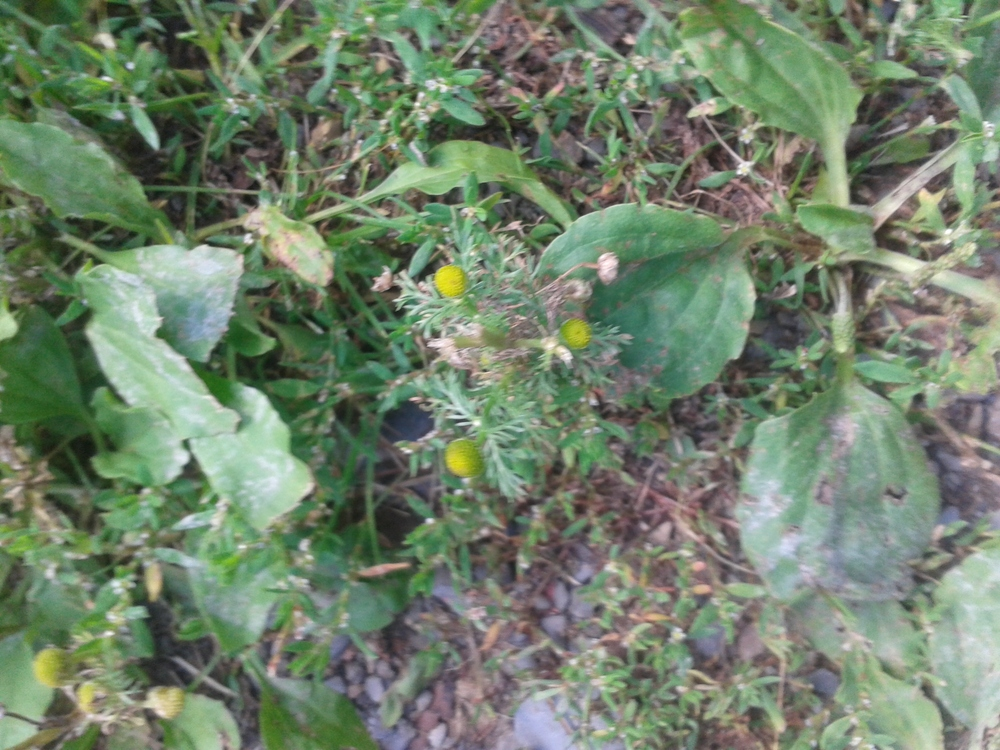
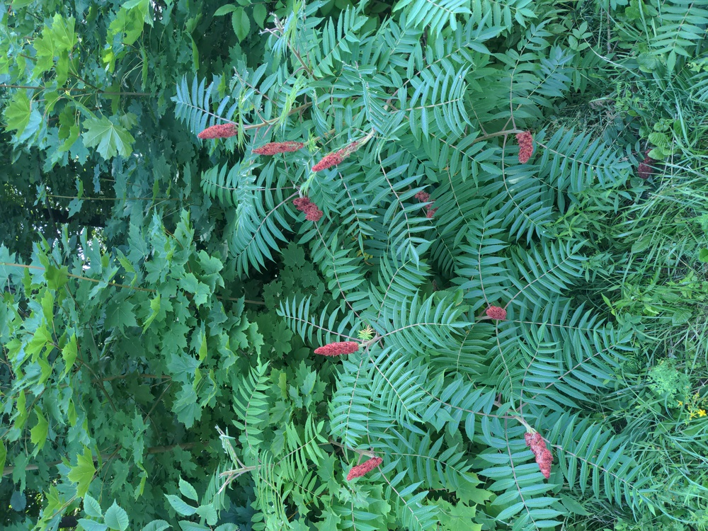

These are some wild edible plants I've tried in Fredericton.
Looks like hearts and is found on lawns, and is lighter coloured than grass (the darker coloured hearts are usually clover). Wood sorrel tastes like candy to me!

Tastes somewhat like pineapple, though I don't like this one that much.
These grow right on the walking trail in Fredericton! You can soak one of the red fruit bunches in water to make a kind of lemonade. I didn't like it that much but it wasn't terrible, kind of like tea. I don't like tea but maybe someone who does like tea would like it?
